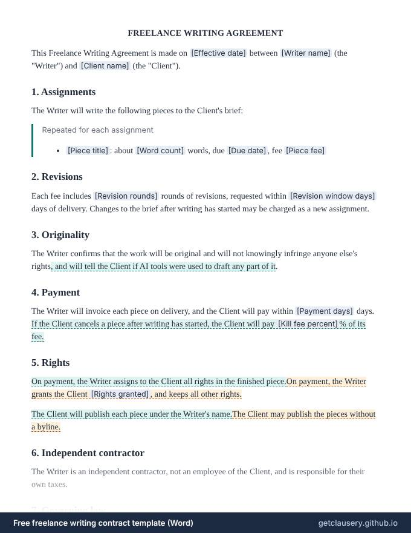

Free freelance writing contract template (Word)
A freelance writing contract with a list of assignments, each with its word count, due date and fee, plus revisions, originality and optional AI-use disclosure, payment and kill fee, rights and byline.
Free, with unlimited documents and no sign-up. Your answers stay in your browser. Who it is for: Freelance writers, copywriters, journalists and the editors who commission them.
Updated · Word (.docx) · Free to use and adapt
Need more than one? Download all 87 templates as one .zip file.
What is in the freelance writing contract
- Assignments with word count, due date and fee
- Revision rounds and revision window
- Originality, with optional disclosure of AI tool use
- Invoicing on delivery and payment terms
- Optional kill fee as a percentage
- All rights assigned, or specific rights licensed
- Byline or no byline
- Independent contractor status

Read the full template
This is the complete wording. [Labels] are filled in from your answers, and highlighted text only appears when it applies; hover over it to see when.
FREELANCE WRITING AGREEMENT
This Freelance Writing Agreement is made on [Effective date] between [Writer name] (the "Writer") and [Client name] (the "Client").
1. Assignments
The Writer will write the following pieces to the Client's brief:
Repeated for each assignment
- [Piece title]: about [Word count] words, due [Due date], fee [Piece fee]
2. Revisions
Each fee includes [Revision rounds] rounds of revisions, requested within [Revision window days] days of delivery. Changes to the brief after writing has started may be charged as a new assignment.
3. Originality
The Writer confirms that the work will be original and will not knowingly infringe anyone else's rights, and will tell the Client if AI tools were used to draft any part of it.
4. Payment
The Writer will invoice each piece on delivery, and the Client will pay within [Payment days] days. If the Client cancels a piece after writing has started, the Client will pay [Kill fee percent]% of its fee.
5. Rights
On payment, the Writer assigns to the Client all rights in the finished piece.On payment, the Writer grants the Client [Rights granted], and keeps all other rights.
The Client will publish each piece under the Writer's name.The Client may publish the pieces without a byline.
6. Independent contractor
The Writer is an independent contractor, not an employee of the Client, and is responsible for their own taxes.
7. Governing law
This Agreement is governed by the laws of [Governing law].
[Writer name]: ____________________________
[Client name]: ____________________________
The questions you answer
Clausery turns the template into a short questionnaire. Optional parts only appear when they apply.
| Question | Type | Asked when |
|---|---|---|
| Effective date | Date | Always |
| Writer name | Short text | Always |
| Client name | Short text | Always |
| Assignments For each item: Piece title, Word count, Due date, Piece fee | Repeating group | Always |
| Revision rounds | Short text | Always |
| Revision window days | Number | Always |
| Disclose ai use | Yes / no | Always |
| Payment days | Number | Always |
| Has kill fee | Yes / no | Always |
| Kill fee percent | Number | If “Has kill fee” is yes |
| Transfer rights | Yes / no | Always |
| Rights granted | Short text | If “Transfer rights” is no |
| Include byline | Yes / no | Always |
| Governing law | Short text | Always |
Prefer to start from your own wording? Download the Word file, edit it, keep the {tags}, and upload it to Clausery. See the template syntax.
Questions
Should a writing contract mention AI?
More clients now ask. The template has an optional promise to tell the client if AI tools were used in drafting, which you can switch on or off.
What rights should I grant?
Clients commissioning web content usually want all rights. For articles, writers often license first publication or a time-limited exclusive and keep the rest. One question switches between the two.
Clauses in this template, explained
Guide: What is a kill fee? How to set one in a freelance contract
Related templates
Browse all 87 free templates by category
This template is a general sample and not legal advice. Laws vary by jurisdiction; have it reviewed before use.